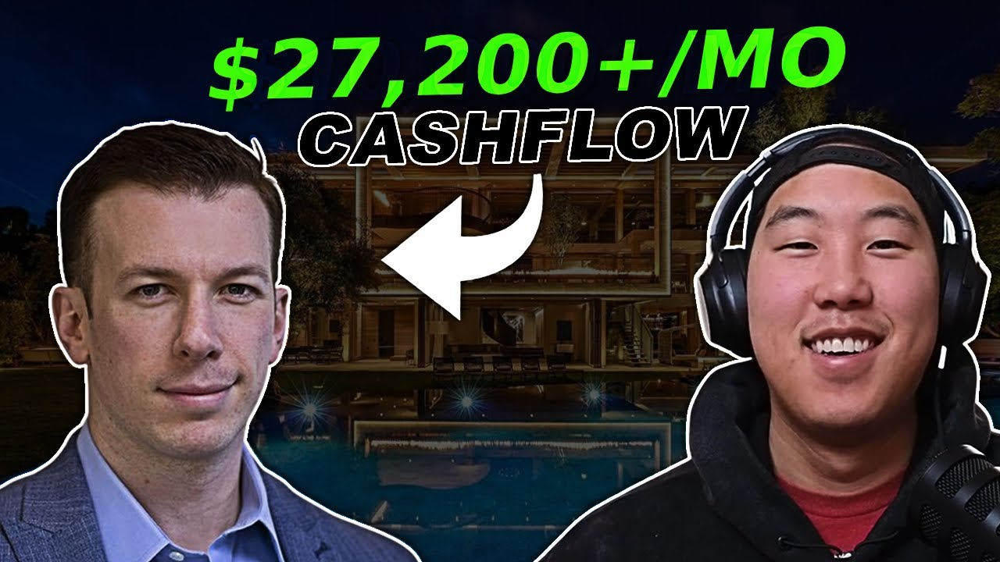

How Rob Generated $27,200 in One Month with Just 2 Airbnbs (2026 Case Study)
Rob went from stuck at home during the pandemic to $27,200/month with 2 Airbnb arbitrage properties in Louisville and St. Simons. Learn his exact strategies for remote operation, professional photography, and building a reliable team.

Rob earns $27,200 per month from just 2 Airbnb arbitrage properties in Louisville, Kentucky and St. Simons, Georgia. Starting as someone stuck at home during the 2020 pandemic, he discovered Legacy Investing Show on Instagram and transformed his financial future within a year. Today, Rob manages both properties with just a couple hours of work per week while earning nearly passive income that continues to grow month over month.
This case study breaks down exactly how Rob built this Airbnb arbitrage business, including his specific strategies for finding properties, operating remotely, and scaling quickly while working around personal commitments like kids and school.
In this article:
Quick Results: Rob's Airbnb Arbitrage Numbers
| Metric | Value | Context |
|---|---|---|
| Monthly Gross Revenue (July) | $30,000 | Both properties combined |
| Monthly Net Payout (July) | $27,200 | After platform fees |
| Monthly Net Cash Flow (July) | ~$20,000 | After rent ($7,000) |
| Properties | 2 | Louisville + St. Simons |
| Gross Revenue/Property | $15,000 | Monthly average (July) |
| Monthly Rent (Combined) | $7,000 | Both properties |
| Time to Scale | ~1 year | From joining to current results |
| Weekly Time Investment | ~2 hours | Nearly passive operation |
Rob's Background: From Pandemic Boredom to Financial Freedom
You don't need any special background to succeed with Airbnb arbitrage. Rob is proof: a 35-year-old who was stuck at home like everyone else during 2020, looking for a way to make his money work harder.
Discovering Airbnb Arbitrage
Rob had just started a new job when the pandemic hit. Like millions of others, he found himself working from home with extra time to think about his financial future. That's when the Legacy Investing Show kept appearing on his Instagram feed. Preston's content about Airbnb arbitrage caught his attention because it offered something different from traditional investing approaches.
The concept resonated with Rob because he wasn't satisfied with where his career was heading. He had money he wanted to invest and put to work, but traditional options didn't excite him. The idea of building a business that could generate real cash flow while requiring minimal ongoing time investment appealed to his goals of financial freedom.
The Decision to Invest in Himself
After watching Preston's content repeatedly, Rob made the decision to join the Legacy Investing Show course. He went through all the modules, which he describes as "incredibly insightful." The comprehensive training covered everything from finding properties to negotiating with landlords to setting up and managing listings.
"When we talk about Preston doing an absolute masterclass and how to do this, I couldn't give it possibly a bigger endorsement. It is about as legit as it gets."
Rob's journey wasn't instant. After completing the modules, he took some time off to handle personal matters - kids, school, and other family obligations. But when he returned to focus on the business, things moved quickly. He started hitting the phones, locked up one deal, then another, and within about a year reached the results he shared in his interview.
The Journey: From Course to Cash Flow
2020: The Starting Point
Situation: Stuck at home during the pandemic, working a new job, seeking ways to invest and build wealth.
The pandemic created a unique opportunity for people willing to take action. While many were paralyzed by uncertainty, Rob saw the downtime as a chance to learn something new. The Legacy Investing Show's promise of a proven system for Airbnb arbitrage provided the roadmap he needed to move forward with confidence.
Rob committed to the course and absorbed all the training materials. The modules covered the complete process from market research to property acquisition to operational systems. This foundation gave him the knowledge and confidence to eventually take action.
First Property: Louisville, Kentucky
Situation: First deal secured locally to test the business model and learn logistics.
Rob's first property was in his hometown of Louisville, Kentucky. This strategic choice allowed him to see firsthand how challenging (or not) the logistics would be. The property was relatively turnkey - it had actually been run as an Airbnb before by the previous tenant. This meant Rob mainly needed to add a few extra amenities, set up an additional room with a queen bed, and get it ready for guests.
He locked in the deal in October, waited for the tenant to move out in January, and went live in February. The results were immediate - bookings started coming in right away. The success of this first property validated the business model and gave Rob the confidence to pursue his next opportunity.
First Property Setup Timeline:
-
October: Deal locked in
-
January: Tenant moved out
-
February: Went live on Airbnb
-
February: Immediately started getting bookings
Second Property: Going Remote
Situation: Scaling to a second property several states away to prove the remote operation model.
Once his first property was running smoothly, Rob immediately started looking for his second opportunity. His revenue projections from the first property showed him the math worked - if he could replicate the success, adding more properties would multiply his cash flow toward financial freedom.
The second property was in St. Simons, Georgia - several states away from Louisville. This forced Rob to master remote operation. He ordered everything for the property remotely, had it all shipped in, and hired a handyman to put everything together. Unlike his first property which was relatively turnkey, this one required furnishing from scratch.
"That actually forced me to go through the remote operator challenges and hurdles which really weren't that significant. It's just hey, you have to be able to trust other people and make sure you do your diligence in hiring a team that is familiar with how short-term rentals work."
The key to successful remote operation was building a reliable team through referrals from other operators. Every team member Rob hired came from recommendations by other successful Airbnb hosts in the area. This network effect ensured he had trustworthy people handling everything on the ground.
Market Selection Strategy: Louisville and St. Simons
Rob chose markets with strong, consistent demand drivers and premium amenity potential. His two-market approach demonstrates how different types of properties can both succeed with the right positioning.
Why Louisville Works
Louisville, Kentucky offers several powerful demand drivers for short-term rentals:
Kentucky Bourbon Trail: Louisville is the gateway to the famous Kentucky Bourbon Trail. Tourists from around the world come to experience the distilleries, and they need places to stay. Rob's property is centrally located, making it perfect for bourbon tour visitors who want easy access to multiple distilleries.
Concert and Event Tourism: Louisville hosts numerous concerts and events throughout the year. Each major event creates a surge in accommodation demand, allowing hosts to command premium rates during peak periods.
Kentucky Derby: The Kentucky Derby is one of the most famous horse racing events in the world. During Derby season, Rob's property is completely booked. Every major event sees full occupancy at premium rates.
"We've been completely booked for every single major event... for people that come to Louisville and do the Kentucky bourbon tour, this has been a great spot for them."
Louisville Property Features:
-
Centrally located for bourbon trail access
-
Full kitchen for guest convenience
-
Trundle bed upstairs (flexible sleeping for 1-2)
-
Two queen bedrooms
-
King bedroom
-
Full bathroom plus additional half bath
-
Dining area and laundry facilities
Why St. Simons Works
St. Simons Island, Georgia serves as a vacation destination for a specific demographic that Rob identified and targeted:
Atlanta Vacation Market: People who live in Atlanta frequently travel to St. Simons for beach getaways. It's close enough for weekend trips but far enough to feel like a real vacation. This creates consistent demand from a large metropolitan population.
Premium Property Positioning: Rob's St. Simons property is larger and has more premium amenities than his Louisville property. With a pool, hot tub, and capacity for up to 12 guests across 4 bedrooms and 4 bathrooms, it commands higher nightly rates and attracts groups willing to pay for quality.
St. Simons Property Features:
-
Swimming pool
-
Hot tub
-
4 bedrooms / 4 bathrooms
-
Sleeps up to 12 guests
-
Multiple premium amenities
-
Ideal for group vacations
Airbnb Arbitrage Strategies That Work
The difference between struggling and thriving in Airbnb arbitrage comes down to execution. Rob attributes his $27,200/month success to four core strategies that accelerated his results.
Strategy 1: The Numbers Game Approach
What it is: Treating property acquisition like sales - the more landlords you contact, the higher your chance of success.
Why it works: Many people give up after a few rejections. But Rob, drawing from sales experience, understood that success is a numbers game. Keep calling, refine your pitch, and eventually you'll get a yes. What surprised him was how many landlords were actually open to the arrangement once they understood the guaranteed revenue proposition.
Rob's Experience: When approaching landlords, Rob found that many were surprisingly receptive. The idea of someone subletting their property for Airbnb might seem like a hard sell, but as Rob discovered, landlords often care most about one thing: guaranteed revenue. As long as they're getting paid reliably, many don't mind the short-term rental model.
"A lot of people were very actually open to it surprisingly. You think at first like the idea of subletting someone else's house is going to be a kind of hard pill to swallow. A lot of these people are just like look, as long as I'm getting guaranteed revenue from this, it's not that big of a deal."
Strategy 2: Remote Property Operation
What it is: Managing properties from a distance by building a reliable local team.
Why it works: Remote operation removes geographic limitations from your business. You can invest in the best markets regardless of where you live, accessing higher returns that might not be available locally. The key is having trustworthy people on the ground who understand short-term rentals.
Rob's Implementation: His St. Simons property is several states away from his Louisville home. He set it up entirely remotely - ordering furniture online, having it shipped to the property, and hiring a handyman to assemble everything. He never saw the property during setup.
The critical success factor was building his team through referrals. Every cleaner, handyman, and maintenance person came recommended by other successful Airbnb operators in the St. Simons market. This network approach ensured Rob hired people who already understood the unique demands of short-term rental operations.
"Everybody I have on my team came from a referral from another operator or several operators actually. And that team is who I absolutely trust with my property because I'm not there, so I can't see it. If something goes wrong I need to have people I can rely on to get over there and handle it."
Strategy 3: Professional Photography Investment
What it is: Hiring professional photographers and doing multiple shoots to capture the property at its best.
Why it works: Your listing photos are your primary sales tool. Guests make booking decisions based largely on visual appeal. Professional photos that showcase your property's best features dramatically outperform smartphone snapshots.
Rob's Results: For his St. Simons property, Rob actually did two photo shoots. The first was good, but after consulting with Preston, they decided to showcase the pool more prominently. Rob brought the photographer back for twilight shots after installing string lights around the pool area. The results were immediate and dramatic.
"After I posted those I got three bookings. Photography sells these things and so don't skip on your photos for sure."
The twilight shots with string lights transformed how the pool area looked in the listing. This visual upgrade directly translated to bookings - three reservations came in shortly after posting the new photos.
Strategy 4: Premium Amenities Stack
What it is: Loading properties with amenities that guests specifically filter for when searching.
Why it works: When guests search Airbnb with specific filters (pool, hot tub, large capacity), only properties with those amenities appear. By stacking multiple premium amenities, you appear in more filtered searches while competing with fewer listings.
Rob's Implementation: His St. Simons property exemplifies the premium amenity approach:
-
Swimming pool
-
Hot tub
-
4 bedrooms
-
4 bathrooms
-
12-guest capacity
-
Multiple other premium features
This combination means the property appears when guests filter for large groups, pool properties, hot tub properties, or any combination. The higher the guest capacity and the more rare amenities, the more revenue potential and the less direct competition.
Financial Results: The Numbers Behind Rob's Success
Rob generates $20,000+ in monthly net cash flow from just 2 properties. Here's the complete financial breakdown of his Airbnb arbitrage business.
Monthly Revenue Breakdown
June Performance (Combined Properties):
| Category | Amount | Notes |
|---|---|---|
| Gross Revenue | $19,000 | Both properties combined |
| Cleaning Fees + Platform Fees | ~$2,200 | Service fees deducted |
| Rent | ~$7,000 | Both properties |
| Net Cash Flow | ~$10,000 | After all expenses |
July Performance (Combined Properties):
| Category | Amount | Notes |
|---|---|---|
| Gross Revenue | $30,000 | 58% increase from June |
| Net Payout | $27,200 | After platform/cleaning fees |
| Rent | ~$7,000 | Both properties |
| Net Cash Flow | ~$20,000 | After all expenses |
Rob's results show significant month-over-month growth. Revenue increased from $19,000 in June to $30,000 in July - a 58% jump. This demonstrates how Airbnb revenue can scale as properties gain reviews, optimize pricing, and build booking momentum.
Portfolio Performance Summary
| Property | Location | Type | Status | Notes |
|---|---|---|---|---|
| Highlands House | Louisville, KY | Turnkey conversion | Cash flowing | Local property, bourbon trail market |
| Grove Getaway | St. Simons, GA | Remote setup | Cash flowing | Premium property with pool/hot tub |
Key Milestones Achieved:
-
Built 2-property portfolio generating $20K+/month net
-
Established remote operation systems for out-of-state property
-
Created nearly passive income requiring only ~2 hours/week
-
Achieved month-over-month revenue growth (58% June to July)
-
Built reliable team through operator referral network
-
Completed turnkey and from-scratch property setups
Key Lessons from Rob's Journey
These five lessons took Rob from pandemic boredom to $20,000+/month in passive income. Each one came from real experience and could save you months of trial and error.
"This forced me to grow in ways that I wouldn't have otherwise. It's forced me to get very familiar with a business that I would have never done otherwise."
Lesson 1: Avoid Analysis Paralysis
The Mistake: Researching endlessly without taking action, waiting for the "perfect" opportunity.
What Rob Learned: One of the biggest hurdles Rob faced was the "paralysis by analysis" trap. It's easy to keep researching, keep learning, keep preparing - and never actually do anything. The successful hosts are the ones who take imperfect action and learn from experience.
Why This Matters: Information without action is worthless. The course provided Rob with everything he needed to know, but knowledge alone doesn't generate income. Only when he started making calls and pursuing properties did his business begin to take shape.
Lesson 2: It's a Numbers Game
The Mistake: Getting discouraged by initial rejections and giving up too soon.
What Rob Learned: Finding properties comes down to volume. If you've been in sales, you know the more people you reach out to, the more yeses you'll eventually get. Rob kept calling, refined his pitch until it clicked, and found that many landlords were actually open to the arrangement.
Why This Matters: Most aspiring Airbnb arbitrage operators quit after a handful of rejections. But those rejections are part of the process, not signs of failure. Each conversation teaches you something and gets you closer to a deal.
"If you've been in sales like Preston and myself, you know the more people you reach out to, eventually you're gonna get a yes. So I just kept calling until I refined my pitch and it finally just clicked."
Lesson 3: Build and Trust Your Team
The Mistake: Trying to do everything yourself or hiring unvetted team members.
What Rob Learned: Remote operation requires trusting other people. You can't be everywhere at once, so you need reliable team members who can handle issues when they arise. The key is hiring through referrals from other successful operators who have already vetted these service providers.
Why This Matters: Your team makes or breaks remote operation. A bad cleaner can tank your reviews. A reliable handyman can save your guest experience when problems arise. Building your team through referrals from other hosts ensures you're hiring people who already understand short-term rental operations.
Lesson 4: Leverage the Community
The Mistake: Trying to figure everything out alone instead of learning from others.
What Rob Learned: The Legacy Investing Show community became an invaluable resource. People from all backgrounds - seasoned investors trying arbitrage for the first time, complete beginners, and everyone in between - share their experiences freely. Whenever Rob had a question, someone in the community had already faced that challenge and could offer guidance.
"Whenever I've had a question it's literally a wealth of knowledge. You have people from all sorts of different backgrounds... people are always very quick to respond and say yeah here's what I experienced, here's how I overcame it, and you know, try it and see what happens. And it's helped me avoid a lot of headaches for sure."
Why This Matters: You don't have to reinvent the wheel. Almost every challenge you'll face has been solved by someone else. Communities accelerate your learning curve and help you avoid costly mistakes.
Lesson 5: Learn to Handle Curveballs
The Mistake: Expecting everything to go smoothly and panicking when issues arise.
What Rob Learned: Things will go wrong - it's a house, after all. Rob had a guest checking in one weekend when his cleaner called to report a clogged kitchen sink. He had to scramble to find a plumber and get the issue resolved before check-in. These curveballs are part of the business, and they become easier to handle with experience.
"You get curveballs thrown at you and they're really not that big of a deal. You eventually just find ways to work through them. So when it pops up again, it's oh hey, we've been there, done that."
Why This Matters: The fear of problems often stops people from starting. But problems are manageable, especially once you've solved them before. Each curveball you handle builds your operational playbook for the future.
Best Tools for Airbnb Arbitrage: Rob's Tech Stack
Rob manages 2 properties with minimal weekly time using these essential tools. Here's the tech stack that powers his $20,000+/month business.
| Category | Tool | Purpose | Why Rob Chose It |
|---|---|---|---|
| Channel Management | Guesty for Hosts | Booking and financial tracking | Compiles all expenses, income, and statistics in one place |
| Cleaning Coordination | Turno | Automated cleaner scheduling | Integrates with Guesty; automates turnover coordination |
Guesty for Hosts: Channel Management Platform
What it does: Guesty for Hosts is a comprehensive channel management platform that handles booking management, financial tracking, and operational statistics across all your properties.
How Rob uses it: Rob relies on Guesty for Hosts as his operational hub. The platform compiles income reports showing gross revenue, accommodation fees, and net payouts across all properties. He can view combined reports for his entire portfolio or drill down into individual property performance. The statistics tracking helps him understand trends and make data-driven decisions.
Key Features Rob Values:
-
Income reports with detailed breakdowns
-
Expense tracking for rent, cleaning fees, platform fees
-
Combined portfolio views and individual property views
-
Integration with other tools like Turno
"This is one of the best channel management platforms out there because you can compile all your expenses and income and statistics. It tracks everything which is great."
Turno: Automated Cleaning Coordination
What it does: Turno is a cleaning service platform that automatically schedules cleaners based on your booking calendar, eliminating manual coordination for turnovers.
How Rob uses it: Turno integrates directly with Guesty for Hosts, automatically notifying cleaners when turnovers are needed based on guest check-out and check-in times. Rob doesn't have to manually schedule or coordinate cleaning - the system handles it automatically.
Why Automation Matters: With 2 properties potentially turning over multiple times per week, manual cleaning coordination would consume significant time. Turno reduces this to essentially zero ongoing effort - cleaners get notifications, complete turnovers, and Rob only needs to intervene if issues arise.
Pro tip from Rob: The combination of Guesty and Turno creates a nearly passive operation. Rob mentions that even his local property doesn't require much work because cleaners get in and out automatically when properties turn over.
Rob's Advice for Beginners
"If you're on the fence, I highly encourage you to just take the leap because looking back from where I am now, I'm so glad I did this."
If Rob were talking to someone considering Airbnb arbitrage today, here's what he'd say:
Just Take the Leap
Rob's primary message to people on the fence is simple: take action. A year from now, you don't want to look back wondering "what if." The opportunity is real, the system works, and the only thing separating you from results is the decision to start.
The program provides everything you need - the training, the scripts, the community support. What you have to provide is the commitment to execute. Rob describes the Legacy Investing Show as "a fantastic program" and "a great opportunity" that he wouldn't change anything about.
Embrace Personal Growth
Beyond the financial results, Rob emphasizes the personal development that comes with building this business. It forced him to grow in ways he wouldn't have otherwise - learning new skills, handling challenges, and becoming familiar with an industry he never would have explored on his own.
"This is a great opportunity... this course was the catalyst in getting all that started. So if you're on the fence, highly hop on this."
The business teaches you problem-solving, team management, customer service, real estate fundamentals, and entrepreneurship. These skills compound over time and apply far beyond just Airbnb.
Watch Rob's Full Interview
Video highlights:
-
0:00 - Rob's background and discovery of Airbnb arbitrage
-
3:00 - Challenges faced and how he overcame them
-
5:30 - Time investment and passive income reality
-
7:00 - Community value and support
-
8:30 - Property portfolio overview (Louisville + St. Simons)
-
11:00 - Detailed revenue breakdown and financial results
-
14:00 - Advice for beginners and final thoughts
Frequently Asked Questions
How much money can you really make with Airbnb arbitrage?
Rob generates $27,200/month in gross revenue from just 2 properties. After $7,000 in rent and approximately $2,200 in cleaning fees and platform fees, he nets around $18,000-$20,000 monthly. His July results showed a 58% increase from June, demonstrating the growth potential as properties gain momentum.
Results vary based on market selection, property quality, and operational execution. Rob's combination of a local Louisville property (targeting bourbon trail tourists and event visitors) and a premium St. Simons property (targeting Atlanta vacationers) creates a diversified portfolio with strong cash flow.
Is Airbnb arbitrage still worth it in 2026?
Based on Rob's continued success and revenue growth, the fundamentals remain strong for operators who execute well. Despite concerns about an "Airbnbust," quality properties with professional operations continue to thrive. Rob specifically addresses this:
"As long as you have a good product, people talk all day about the Airbnbust. If you have a good product, the ones that are getting killed are the ones that haven't followed a program like this. For us that are sticking with it and actually doing well, that's fine - we'll let a handful of these people go under and we'll still have great properties that are going to outperform."
How many hours per week does Airbnb arbitrage really require?
Rob spends approximately 2 hours per week managing both properties combined. He describes the business as "not completely passive but pretty close." The key is frontloading work during setup and implementing automation tools like Turno and Guesty that handle day-to-day operations.
Most of Rob's ongoing work involves managing bookings and keeping tabs on properties. Cleaning, guest communication, and coordination happen automatically through his tech stack and team.
Can you manage Airbnb properties in other states?
Yes - Rob proves this with his St. Simons property, which is several states away from his Louisville home. Successful remote operation requires building a reliable local team through referrals from other operators. Every team member Rob hired came recommended by successful Airbnb hosts already operating in that market.
The challenges of remote operation "really weren't that significant" according to Rob. The main requirements are trusting others and doing due diligence in hiring people familiar with short-term rental operations.
Start Your Airbnb Arbitrage Journey
Ready to build your own Airbnb arbitrage business like Rob?
Learn more about Legacy Investing Show
Related Success Stories
Helpful Resources
About Legacy Investing Show
Legacy Investing Show is Preston Seo's comprehensive Airbnb arbitrage training program. Since founding, the program has:
-
Trained 2,000+ students across the United States
-
Generated $10M+ in cumulative student revenue
-
Built an active community of short-term rental investors
-
Produced numerous students earning $10K+/month
Preston Seo created Legacy Investing Show to teach the exact systems that scaled his business, providing the mentorship, scripts, and community that accelerate success.
blog resources | Watch free training
This case study is based on Rob's video interview conducted in June 2022. All statistics and quotes are directly from Rob's experience. Individual results vary based on market, effort, and capital invested.
Last updated: April 2, 2026
Preston Seo
Real estate investor and financial educator helping people build generational wealth through smart investing strategies.
Frequently asked questions
- How much money can you make with Airbnb arbitrage?
- Rob generates $27,200/month in gross revenue from just 2 properties. After $7,000 in rent and approximately $2,200 in cleaning fees and platform fees, he nets around $18,000-$20,000 monthly. His properties in Louisville and St. Simons consistently perform well due to tourism demand and premium amenities.
- Is Airbnb arbitrage still profitable in 2026?
- Yes. Rob started during the 2020 pandemic and continues to grow. His July revenue jumped to $30,000 gross with $27,200 net payout. Success depends on market selection, property quality, and professional execution. Despite 'Airbnbust' fears, quality operators with good properties continue to thrive.
- How long does it take to make money with Airbnb arbitrage?
- Rob secured his first property and went live within a few months of focused effort. He locked in his first deal in October, the tenant moved out in January, and he went live in February - immediately starting to get bookings. Most Legacy Investing Show students get their first property in 30-60 days.
- Do you need experience to start Airbnb arbitrage?
- No. Rob had no prior real estate experience. He was working a regular job when he discovered Airbnb arbitrage through Instagram during the pandemic. The Legacy Investing Show course provided the roadmap, scripts, and step-by-step guidance he needed to succeed.
- How much does it cost to start Airbnb arbitrage?
- Startup costs vary by property. Rob's first property was relatively turnkey since it had been run as an Airbnb before. His second property required furnishing from scratch - ordering everything remotely and having a handyman assemble it. Typical startup costs include first month's rent, security deposit, and furnishing.
- Can you manage Airbnb properties remotely?
- Yes. Rob manages one property locally in Louisville and another several states away in St. Simons. Remote operation requires building a reliable team through referrals - cleaners, handymen, and maintenance people you trust. Using tools like Guesty and Turno automates most day-to-day operations.
- What is the best market for Airbnb arbitrage?
- Rob chose Louisville for its bourbon tours, concerts, and Kentucky Derby demand. His second property in St. Simons targets Atlanta vacationers seeking beach getaways. The best markets have strong tourism drivers, events that create booking demand, and landlords open to short-term rental arrangements.
- Is Legacy Investing Show worth it?
- Based on Rob's results, the ROI speaks for itself. He calls the course 'an absolute masterclass' and says he 'couldn't give it possibly a bigger endorsement.' The modules were 'incredibly insightful' and the community provided answers whenever he had questions. His $18,000+/month cash flow validates the investment.
- How many hours per week does Airbnb arbitrage require?
- Rob spends just a couple hours per week on both properties combined. Automation through Turno for cleaning and Guesty for guest communication handles most tasks. He describes it as 'not completely passive but pretty close' - you put in work on the front end, then maintain and grow.
- What tools do successful Airbnb hosts use?
- Rob uses Guesty for Hosts as his channel management platform to track income, expenses, and statistics. He uses Turno for automated cleaning coordination that integrates with his booking platform. Professional photography is essential - Rob did two photo shoots on one property and got three bookings after posting twilight shots.